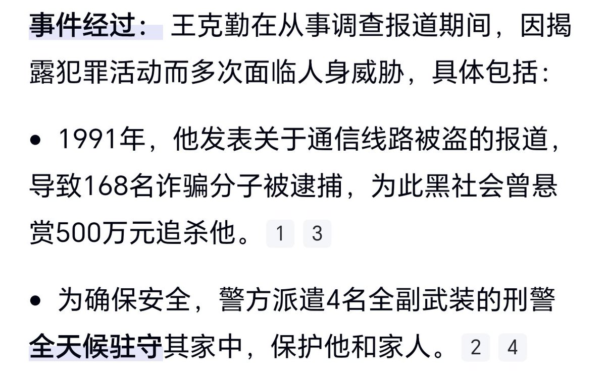
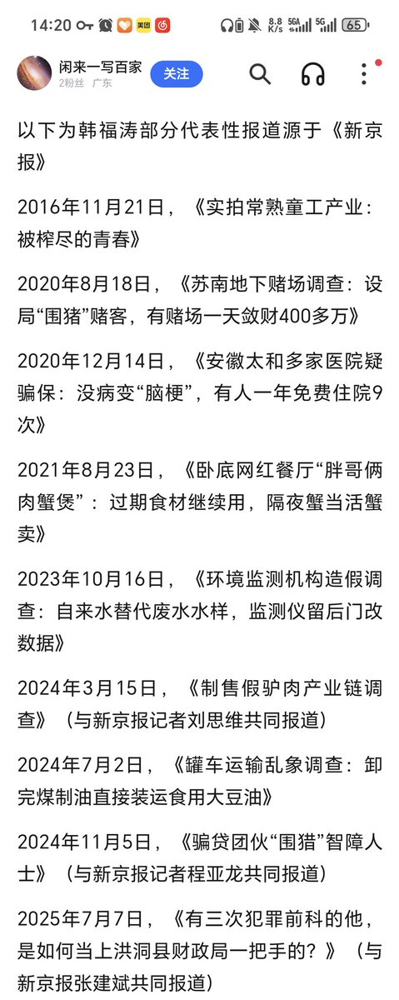

小虚空🍥
@tokerumaisurii
@Milifo363999 @Minokakay @XldscX 企业家沈某被两名外地警察从江苏家中带走，在被索要财物后警醒，后在浙江趁其不备跳车逃走报（当地）警，这事是2023年的。多部反“远洋捕捞”条文（如长三角《八项举措》）在24年紧急发布，如果没有了何苦突然防六年前的问题？最高检、最高法针对“远洋捕捞”抬头，在24、25年才又做过一批督办、典型案例。


Milifo 咲樂团
@Milifo363999
@Minokakay @XldscX rt 且发生时间为1991年
2018以后从来没有过所谓“跨省抓捕”了
看看最近的油罐车吧，有跨省追捕，企业去问责吗，似乎并没有
一直有调查记者在暗中去做出合理的调查，只是我们平时很少注意他们而已 https://t.co/bzgvnjRNsx